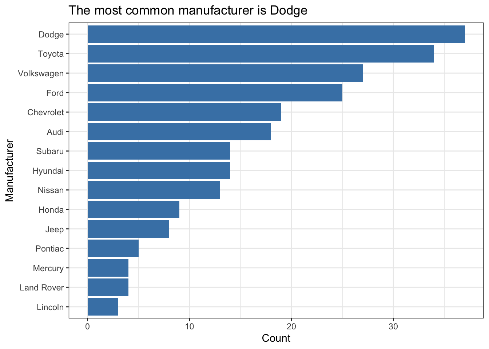

Final project tips + resources
Data sources
Some resources that may be helpful as you find data:
Other data repositories
Tips
Ask questions if any of the expectations are unclear.
Code: In your write up your code should be hidden (
echo = FALSE) so that your document is neat and easy to read. However your document should include all your code such that if I re-knit your Qmd file I should be able to obtain the results you presented.- Exception: If you want to highlight something specific about a piece of code, you’re welcome to show that portion.
Merge conflicts will happen, issues will arise, and that’s fine! Commit and push often, and ask questions when stuck.
Make sure each team member is contributing, both in terms of quality and quantity of contribution (we will be reviewing commits from different team members).
All team members are expected to contribute equally to the completion of this assignment and group assessments will be given at its completion - anyone judged to not have sufficient contributed to the final product will have their grade penalized. While different teams members may have different backgrounds and abilities, it is the responsibility of every team member to understand how and why all code and approaches in the assignment works.
Formatting + communication tips
Suppress Code, Warnings, & Messages
- Include the following code in a code chunk at the top of your .qmd file to suppress all code, warnings, and other messages. Use the code chunk header
{r set-up, include = FALSE}to suppress this set up code.
knitr::opts_chunk$set(echo = FALSE,
warning = FALSE,
message = FALSE)An alternative approach is to add the following code to the YAML:
execute: echo: false warning: false message: false
Headers
- Use headers to clearly label each section. Make sure there is a space between the last
#and the title, so the header renders correctly. For example,###Section Titlewill not render as header, but### Section Titlewill.
References
- Include all references in a section called “References” at the end of the report.
- This course does not have specific requirements for formatting citations and references.
Appendix
- If you have additional work that does not fit or does not belong in the body of the report, you may put it at the end of the document in section called “Appendix”.
- The items in the appendix should be properly labeled.
- The appendix should only be for additional material. The reader should be able to fully understand your report without viewing content in the appendix.
Resize figures
- Resize plots and figures, so you have more space for the narrative.
- Resize individual figures: Use the code chunk header
{r plot1, fig.height = 3, fig.width = 5}, replacingplot1with a meaningful label and the height and width with values appropriate for your write up. - Resize all figures: Include the
fig_widthandfig_heightoptions in your YAML header as shown below:
- Resize individual figures: Use the code chunk header
---
title: "Your Title"
author: "Team Name + Group Members"
output:
pdf_document:
fig_width: 5
fig_height: 3
---Replace the height and width values with values appropriate for your write up.
Arranging plots
Arrange plots in a grid, instead of one after the other. This is especially useful when displaying plots for exploratory data analysis and to check assumptions.
If you’re using ggplot2 functions, the
patchworkpackage makes it easy to arrange plots in a grid. See the documentation and examples here.If you’re using base R function, i.e. when using the
emplogitfunctions, put the codepar(mfrow = c(rows,columns))before the code to make the plots. For example,par(mfrow = c(2,3))will arrange plots in a grid with 2 rows and 3 columns.
Plot titles and axis labels
Be sure all plot titles and axis labels are visible and easy to read.
- Use informative titles, not variable names, for titles and axis labels.
- Use
coord_flip()to flip the x and y axes on the plot. This is useful if you a bar plot with an x-axis that is difficult to read due to overlapping text.
❌ NO! The x-axis is hard to read because the names overlap.
ggplot(data = mpg, aes(x = manufacturer)) +
geom_bar()
✅ YES! Names are readable
ggplot(data = mpg, aes(x = manufacturer)) +
geom_bar() +
coord_flip()
Do a little more to make the plot look professional!
- Informative title and axis labels
- Flipped coordinates to make names readable
- Arranged bars based on count
- Capitalized manufacturer names
- Optional: Added color - Use a coordinated color scheme throughout paper / presentation
- Optional: Applied a theme - Use same theme throughout paper / presentation
mpg |>
count(manufacturer) |>
mutate(manufacturer = str_to_title(manufacturer)) |>
ggplot(aes(x = fct_reorder(manufacturer,n), y = n)) +
geom_bar(stat = "identity", fill = "steelblue") +
coord_flip() +
labs(x = "Manufacturer",
y = "Count",
title = "The most common manufacturer is Dodge") +
theme_bw() 
Tables and model output
- Use the
kablefunction from the knitr package to neatly output all tables and model output. This will also ensure all model coefficients are displayed.- Use the
digitsargument to display only 3 or 4 significant digits. - Use the
captionargument to add captions to your table.
- Use the
model <- lm(mpg ~ hp, data = mtcars)
tidy(model) |>
kable(digits = 3)| term | estimate | std.error | statistic | p.value |
|---|---|---|---|---|
| (Intercept) | 30.099 | 1.634 | 18.421 | 0 |
| hp | -0.068 | 0.010 | -6.742 | 0 |
Guidelines for communicating results
- Don’t use variable names in your narrative! Use descriptive terms, so the reader understands your narrative without relying on the data dictionary.
- ❌ There is a negative linear relationship between mpg and hp.
- ✅ There is a negative linear relationship between a car’s fuel economy (in miles per gallon) and its horsepower.
- Know your audience: Your report should be written for a general audience who has an understanding of statistics at the level of STA 210.
- Avoid subject matter jargon: Don’t assume the audience knows all of the specific terminology related to your subject area. If you must use jargon, include a brief definition the first time you introduce a term.
- Tell the “so what”: Your report and presentation should be more than a list of interpretations and technical definitions. Focus on what the results mean, i.e. what you want the audience to know about your topic after reading your report or viewing your presentation.
- ❌ For every one unit increase in horsepower, we expect the miles per gallon to decrease by 0.068 units, on average.
- ✅ If the priority is to have good fuel economy, then one should choose a car with lower horsepower. Based on our model, the fuel economy is expected to decrease, on average, by 0.68 miles per gallon for every 10 additional horsepower.
- Tell a story: All visualizations, tables, model output, and narrative should tell a cohesive story!
- Use one voice: Though multiple people are writing the report, it should read as if it’s from a single author. At least one team member should read through the report before submission to ensure it reads like a cohesive document.